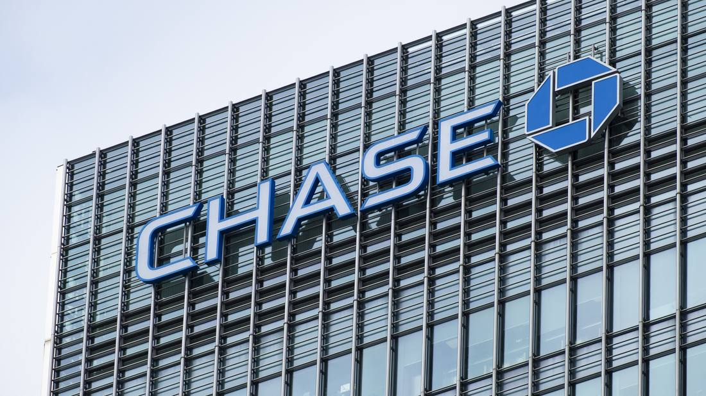
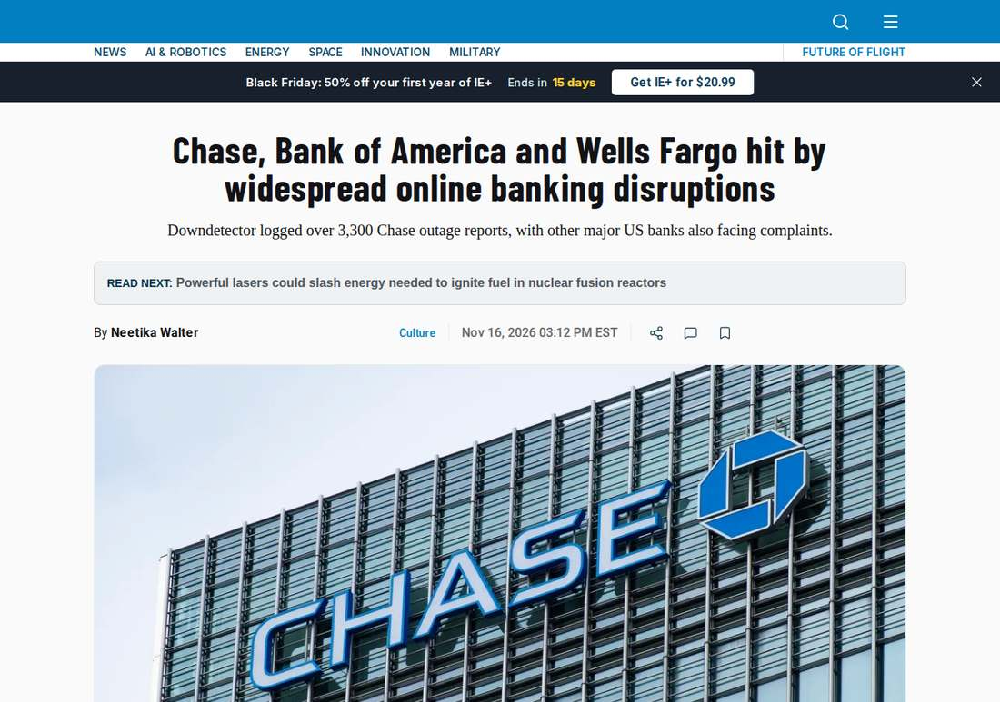

Chase, Bank of America, Wells Fargo Hit by Online Banking Outages
Online banking platforms at Chase, Bank of America, Wells Fargo, U.S. Bank and Capital One suffered outages on Monday, with Downdetector reports surging into the thousands and Zelle transfers disrupted. Chase said a technical issue, not a cyberattack, was slowing transactions; no common cause across the banks has been confirmed.

- 01THE FIRST REPORTS — On Monday morning, Zelle problem reports begin around 9:30 a.m. ET, and Chase customers start reporting trouble with online and mobile banking, balances and transactions.
- 02THE PEAK — Around 2 p.m. ET, Downdetector reports peak: Chase at about 4,614, Bank of America at about 1,900, U.S. Bank at about 900 and Wells Fargo at about 800, with Zelle past 500.
- 03THE CONFIRMATIONS — Chase confirms a technical issue, not a cyberattack, in an email to USA TODAY; Wells Fargo says online banking is temporarily unavailable; Zelle says its network is operating normally.
WHAT HAPPENEDWhat Happened
Online banking platforms at several of the largest U.S. banks suffered outages on Monday, with customers reporting trouble logging in, checking balances and moving money. Downdetector, which tracks user-submitted outage reports, recorded a surge across Chase, Bank of America, Wells Fargo, U.S. Bank and Capital One, and the payment service Zelle. Chase drew the heaviest volume, with approximately 4,614 reports by about 2 p.m. ET, followed by Bank of America at about 1,900, U.S. Bank at about 900 and Wells Fargo at about 800. Zelle reports passed 500, starting around 9:30 a.m. ET and peaking around 2 p.m. ET. Truist customers also reported difficulties accessing accounts.
Chase confirmed a technical problem and ruled out a cyberattack. "Due to a technical issue, some transactions are taking longer than usual to complete but customers still have access to their accounts and funds," a Chase spokesperson said in an email to USA TODAY. "We are working to resolve this as quickly as possible. This is a technical issue, not cyber related." The Chase app displayed a banner saying some services were unavailable. Wells Fargo said on its website that online banking was temporarily unavailable and pointed customers to ATMs, branches and customer service. U.S. Bank, meanwhile, said its systems were not directly affected, though customers sending or receiving Zelle payments involving other banks could experience delays. Zelle said its network was operating normally and attributed the problems customers encountered to participating banks.
No cause has been confirmed for the problems at Bank of America, Wells Fargo or U.S. Bank, and it was not immediately clear whether the problems reported across different banks were related. Reuters reported there was no indication at the time that the same bug was affecting multiple banks. The disruptions come days after a Microsoft 365 outage that blocked Outlook, Teams and other services for more than a day, and after a communications failure disrupted air traffic nationwide; there is currently no evidence establishing that any of these events are connected.
WHY IT MATTERSA stress test nobody scheduled
Simultaneous outages at the biggest U.S. banks are the story even without a common cause. Each bank appears to have suffered its own technical fault on the same day, which is either a coincidence or a reminder that the same vendors, networks and software patterns sit behind all of them. The practical pain ran through Zelle: transfers between bank accounts stalled even though Zelle itself said its network was fine, because the endpoints were not. For customers, the distinction between one shared bug and several separate ones is academic; the money did not move either way.
The numbers need care. Downdetector counts user complaints, not affected customers, and none of the banks released their own figures. Chase's own statement is the firmest fact in the story: transactions slowed, accounts stayed accessible, and the cause was technical, not a cyberattack. That framing matters because the week has been full of infrastructure failures, and the gap between a cluster of faults and a coordinated attack is exactly where speculation grows. The banks' job now is to close that gap with root causes, not reassurance.
WHAT TO WATCHRestoration and the post-mortem
Whether services are fully restored by Tuesday and whether any bank publishes a root cause. Chase, Bank of America, Wells Fargo and U.S. Bank each owe an explanation for their own outage, and the explanations will say more together than apart: four independent faults on one day would point to shared fragility in the stack the banks rely on.
Whether regulators ask questions. A single bank's outage is an operational matter; a cluster across the largest banks on the same day invites scrutiny of the common dependencies underneath them. Watch also for delayed Zelle transfers clearing in duplicate or out of order, the usual aftershock when payments freeze mid-flight, and for any sign the problems spread to card networks or ATM systems, which so far have not been reported as affected.
SIGNAL JUDGMENT — ANALYSISFour banks, no single cause, one fragile week
Tokenta Signal's judgment: the honest read of this outage is narrower than the headlines and wider than any single bank. Narrower, because the confirmed facts are modest: Chase had a technical fault, Wells Fargo's online banking went temporarily unavailable, and the rest is user reports plus a wire service saying there is no sign of a shared bug. Wider, because four of the largest U.S. banks failing online on the same day, in the same week as a Microsoft 365 outage and an air-traffic communications failure, is a pattern even if it is not a plot. The signal is not that the banks were attacked. It is that the everyday machinery of moving money rests on a small number of shared systems, and when several of them stumble at once, nobody can yet say why. The post-mortems, not the Downdetector charts, will decide whether this was coincidence or common cause.
WHAT REMAINS UNCERTAINWhat Remains Uncertain
EVIDENCEEvidence

USA TODAY reported on November 16, 2026 that online platforms at Chase, Bank of America, Wells Fargo, U.S. Bank and Capital One suffered technical difficulties, with Downdetector reports surging into the thousands, and that Chase confirmed a technical issue, not a cyberattack, was slowing transactions.
PRIMARY SOURCESPrimary Sources
- USA TODAY: Online service outages hit banks including Chase, BoA, Wells Fargo
https://www.usatoday.com/story/money/2026/11/16/bank-outage-nationwide-chase-bofa--live/92814152007/ - Democrat and Chronicle: Bank outages reported: Chase, Bank of America, Wells Fargo customers report issues
https://www.democratandchronicle.com/story/news/2026/11/16/bank-outages-today-chase-bank-of-america-wells-fargo/92814359007/ - Interesting Engineering: Chase, Bank of America and Wells Fargo hit by online banking outages
https://interestingengineering.com/culture/us-banks-online-banking-outages